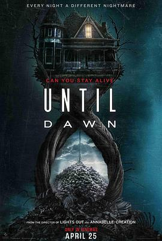

6.0
直到黎明
Until Dawn
2025
美国
评分 6.0
导演:
大卫·F·桑德伯格
演员:
艾拉·鲁宾 / 迈克尔·西米诺 / 柳智英 / 敖德萨·阿德隆 / 玛雅·米切尔 / 彼得·斯特曼 / 贝尔蒙特·卡梅利
类型:
剧情,恐怖
剧情简介
一群年轻人来到偏远山谷，只因主角克洛芙（艾拉·鲁宾 饰）决心查明妹妹梅兰妮神秘失踪的真相。她与前男友马克斯（迈克尔·西米诺 饰）、好友尼娜（敖德萨·阿德隆 饰）、马克斯的继妹梅根（柳智英 饰）及尼娜的男友艾布（贝尔蒙特·卡梅利 饰）一同，驾车抵达当地一个废弃访客中心。夜幕降临、暴雨来袭，他们在中心暂避，却在墙上发现妹妹的失踪公告，恐怖随之来临。一名身着面具的杀手展开逐一猎杀，血腥场景接连发生。但就在他们以为一切结束时，醒来后竟发现“今夜”从头再来——时间回圈的诡异机制令死亡成为一次又一次的重来。空气凝固、钟表沙漏倒转、角色陷入深寒般的绝望。他们必须破解这个循环，活到天明，才有可能离开。随着夜晚的重复，线索渐渐浮现：山谷曾在矿难中塌陷，心理学博士艾伦·希尔（彼得·斯特曼 饰）隐藏实验真相，克洛芙内心的伤痛也化作怪物般的幻影。全片紧张且富有想象：镜头将突然关闭的灯光、奔逃的脚步声、湿滑楼梯、雨水滴落的回声一一刻画，制造一种“你不知道下一秒自己会在哪”的不安感。最终，角色们不再只是逃亡，更在与自己恐惧博弈。影片虽为一次性故事，但其独立完整、恐怖气氛浓烈、时间循环设定创新，给观众留下深刻印象。